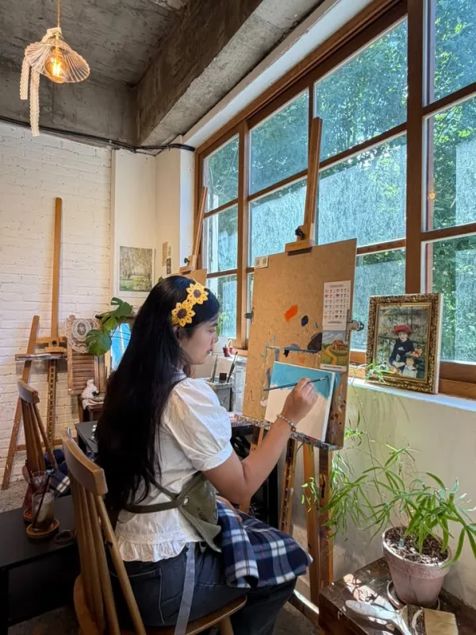

PROJECT / 01
Parking Management
A data-structure based parking system exploring stacks, queues and linked lists for real-world vehicle management.
Ask me about this projectA Computer Science student exploring the intersection of code, creativity and problem solving. I build things for the web, experiment with technology, and occasionally fight with semicolons.

I'm Sabhyata Chhetri, a Computer Science student who enjoys understanding how things work and then trying to build them myself.
My interests range from web development and Python to data structures, algorithms and creative digital experiences.
I'm still learning — but that's exactly what makes building things interesting.
A data-structure based parking system exploring stacks, queues and linked lists for real-world vehicle management.
Ask me about this projectAn OpenCV experiment exploring image enhancement and histogram equalization.
Ask me about this projectMore experiments, ideas and projects are currently making their way from my brain into code.
Stay tuned →Exploring programming, data structures, algorithms and software development.
Building interactive websites with HTML, CSS and JavaScript.
Turning small experiments into larger, useful projects.